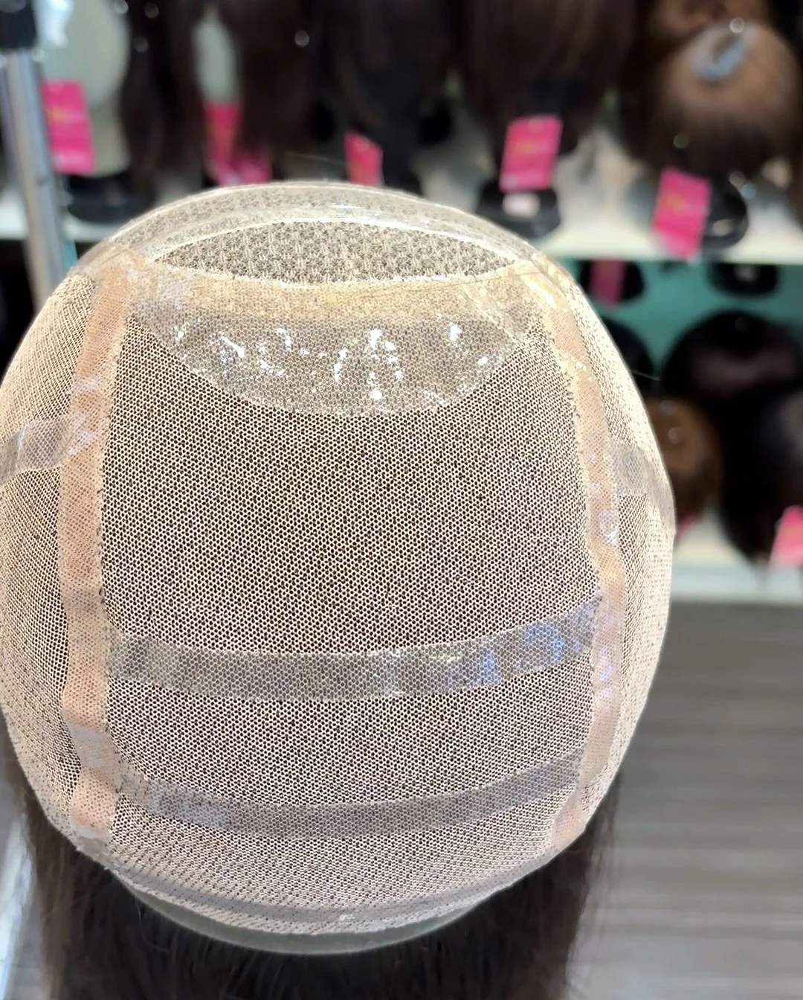

日常怎麼洗
一律用溫水洗。把假髮浸在溫水裡，加專用洗劑，輕輕壓洗、不要搓揉；洗完用毛巾吸掉水分，放在假髮架上陰乾。
不要用高溫吹乾，也不要拿去曝曬。不同材質的洗法不一樣，交件時設計師會當面教你。
哪些可以回店保養、修理
限本店購買的真髮或日本進口科技絲假髮、髮片，可回店清潔保養、手工修理。
一般纖維假髮和 Cosplay 假髮屬於消耗品：髮絲表面有一層保護膜，會隨著清洗慢慢流失，之後髮絲容易毛躁、打結，最後糾結成一團，所以不提供清潔、修理。
在本店購買的客人，享有本店客人專屬保養服務。保養、修理都請親自帶到店裡；建議先用 LINE @995uevgh 或電話 02-2552-6562 預約。
假髮保養常見問題
假髮要怎麼洗？
假髮請用溫水加專用洗劑輕壓清洗、不要搓揉，再用毛巾吸乾後放在假髮架上陰乾。不要高溫吹、曝曬；洗法依材質不同，交件時設計師會當面教。
別家買的假髮也可以拿來保養、修理嗎？
限本店購買的真髮或日本進口科技絲假髮、髮片，可回店清潔保養、手工修理。一般纖維假髮和 Cosplay 假髮屬於消耗品，不提供清潔、修理。保養、修理都請親自帶到店，建議先預約。
保養、修理要先預約嗎？
建議先用 LINE @995uevgh 或電話 02-2552-6562 預約。週一至週六 11:30–19:30，週日公休。